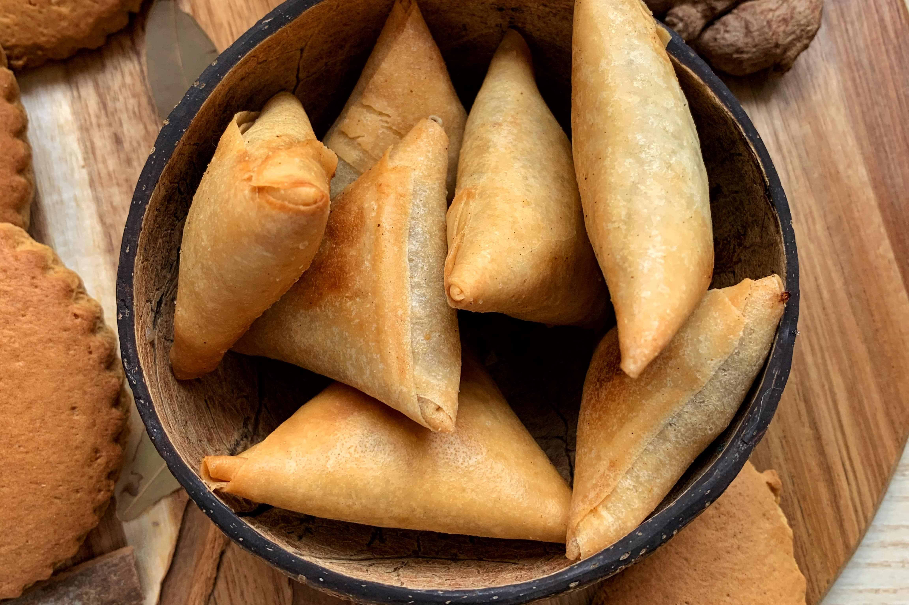
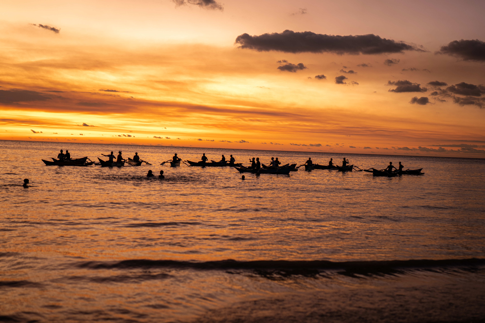
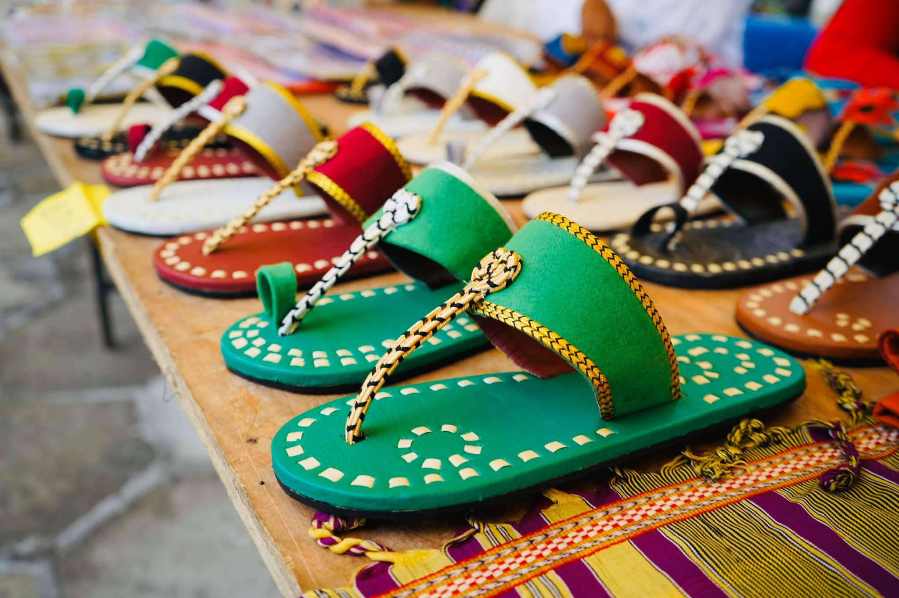
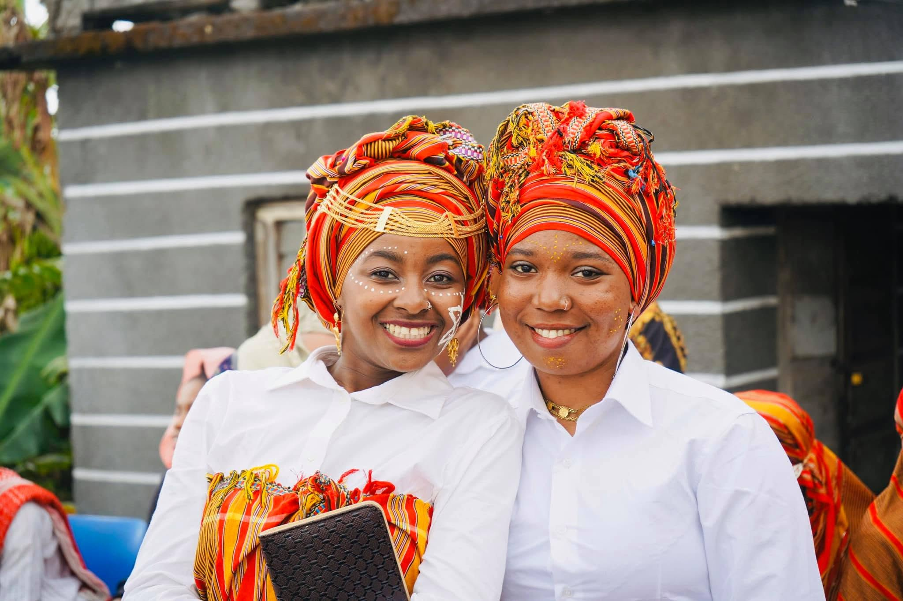
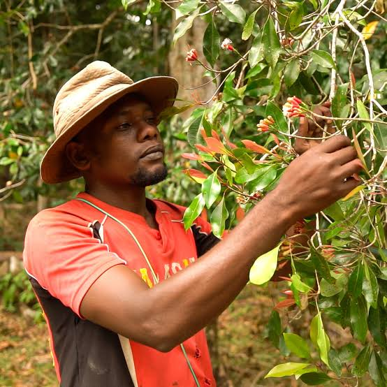

1 / SAVEURS
Gastronomie
Recettes, produits et traditions culinaires : une invitation à découvrir les saveurs qui se transmettent.
Salon de la culture et de la
gastronomie comorienne
Deux journées pour découvrir, partager et célébrer. Toute la richesse d’une culture, le temps d’un week-end à Nanterre.
Dès 20 € / personne · Pass 2 jours à 30 €

2e ÉDITIONSam. 16 & dim. 17 janvier 2027
Salle des congrès · Nanterre, France
20 € la journée · 30 € les 2 jours
UN ARCHIPEL, MILLE FAÇONS DE PARTAGER
Une recette que l’on transmet. Un geste que l’on découvre. Une conversation qui rapproche.
Pour sa 2e édition, Comores Events vous invite à explorer le patrimoine comorien à travers ses couleurs, ses savoir-faire et ses rencontres. Un rendez-vous ouvert aux curieux comme à celles et ceux qui souhaitent renouer avec leurs racines.
LES UNIVERS DU SALON
Laissez-vous guider par vos envies, au fil des découvertes.

Recettes, produits et traditions culinaires : une invitation à découvrir les saveurs qui se transmettent.

Métiers, traditions et savoir-faire comoriens. Prendre le temps de regarder, de comprendre et d’échanger.

La musique comme lien, les échanges entre générations comme horizon. Une culture qui se vit ensemble.
Le programme et les intervenants seront communiqués par l’organisation.
IL Y A 2 JOURNÉES
Venez pour une journée de découvertes, ou prenez le temps de vivre tout le week-end.
Les horaires détaillés et les intervenants seront annoncés prochainement.
Salon, découvertes culturelles et gastronomiques : une première journée pour explorer les univers comoriens.
Rencontres, animations et découvertes : prolonger les échanges et partager de nouvelles histoires.

Aux Comores, les savoir-faire racontent notre histoire · Image d’illustrationPLUS QU’UN RENDEZ-VOUS
Le patrimoine se raconte dans les gestes, les matières et les souvenirs. Il se transmet à table, en musique, dans les échanges entre générations.
À Nanterre, faisons vivre ces liens. Que les Comores soient votre histoire ou votre prochaine découverte.
BILLETTERIE · ÉDITION 2027
Une formule, une journée, le nombre de personnes. L’essentiel, simplement.
Maquette · Intégration de l’API de paiement non active.
INFORMATIONS PRATIQUES
L’immersion commence ici, en Île-de-France. Retrouvez-nous à la Salle des congrès pour deux journées consacrées à la culture et à la gastronomie comoriennes.
NANTERRE · FRANCE
Horaires détaillés à venir.
AVANT DE VENIR
Le billet 1 journée est à 20 € par personne, avec le choix du samedi ou du dimanche. Le pass 2 jours est à 30 € par personne pour profiter des deux journées.
À la Salle des congrès, 118 rue du 8 Mai 1945, 92000 Nanterre, France.
Les horaires détaillés, les artistes et les exposants seront annoncés par l’organisation avant le salon.
Cette page est une maquette de démonstration. La réservation définitive sera activée après l’intégration de l’API de billetterie FOODYFLY.
Voici le récapitulatif de votre réservation :
Cette maquette ne déclenche aucun paiement. Le bouton final sera relié à la billetterie FOODYFLY via son API.